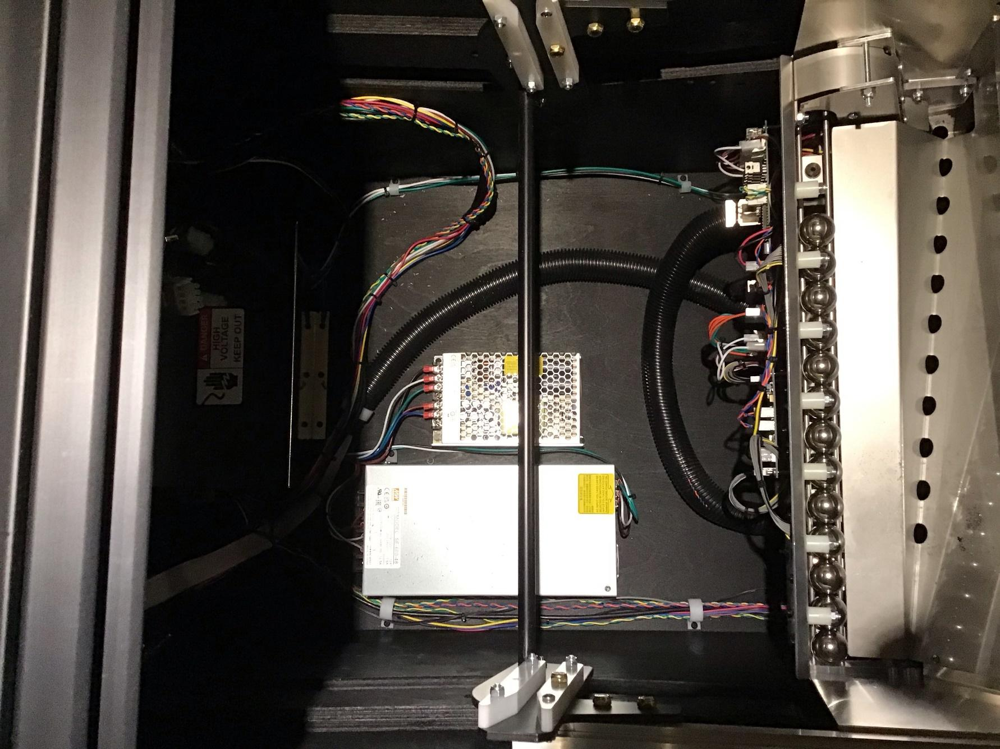

Quiet Fan Mod
The fan in the power supply at the bottom cabinet of the P3 base machine is very noisy. Pinmonk sells a mod to replace the noisy fan with a much quieter model.
“PinMonk's Spooky/Multimorphic Plug n Play Quiet Fan Kit” is available for $20USD on Pinmonk's website or pinside store or Pinball Life. Take the time to visit the first link to see the result of his research.
If you want a plug’n’play solution, I recommend you buy this kit. Unfortunately, PinMonk does not ship internationally, so I had to implement the mod myself. This could make you save a few bucks too if you are willing to splice two wires.
As always, replacing the fan will void your warranty. Do this at your own risk.
Fan Comparison
The original fan in the power supply is a Sunon KD1206PTB1 with extra product code 13 (2) E.B2917 A.GN
It is rated 23.5 CFM at 34.5 dBA
Sunon is the manufacturer
KD Series of fans
12 is 12VDC
06 is 60mm frame size
P is PBT Plastic frame material
T is 25mm frame thickness
B is ball bearing system
1 is high speed (4500RPM)
13 is motor model
(2) is two ball bearing
E.B2917 is ?
A is auto restart
GN is RoHS compliance
Pinmonk’s replacement fan is a Sunon HA60251V4-1000U-A99
It is rated 13.8 CFM at 10.7 dBA
Sunon is the manufacturer
H Series of fans
A is motor type
60 is 60mm frame size
25 is 25mm fan thickness
1 is 12VDC
V is Vapo bearing
4 is super low speed (2500 RPM)
1 is Gen1
000U is customer code
A99 is function code AutoRestart
Maybe PinMonk picked that fan because it is extremely quiet and has a good CFM for the category.
The CFM is only 13.8 compared to 23.5 but according to his research this is sufficient for home use because the fan is constantly on.
You can order the quiet fan in bulk packaging on Digikey.
SDTM Installation Video
SDTM has an excellent video showing how to install PinMonk’s mod. Click on the image to see it on YouTube.

Multimorphic Installation
These are the detailed instructions specific to the Multimorphic P3.
- Unplug the machine from the power outlet. Just turning off the machine is not safe.
- Remove the lockbar and glass.
- Place the playfield in service position 1.
- Remove the playfield module.
The power supply is the shiny box on the left at the bottom of the cabinet.

- Unscrew the 2 power supply legs from the cabinet (lower left and top right).
- Remove the plastic cover protecting the front wires. Unscrew the font wires.
From left to right, you have L N G wire terminals connected to the black, white and green wires respectively.
- Remove the plastic cover protecting the back wires. Unscrew the back wires. There are two red wires connected to V- and two white wires connected to V+. This step is a bit awkward because there is not a lot of slack on the wires. This is why the picture looks upside down.
- Unscrew the top of the power supply casing. There are two screws on the top, including one hidden underneath the yellow sticker. There are 3 screws on each side plus the top screw on each leg. You don’t have to remove the bottom screw on the leg but you may have to loosen it.
- Remove the top of the power supply casing.
- Unscrew two screws holding the fan (top left and bottom right of the circular grill).
- Remove the 5 screws holding the board, one in each corner and one in the middle of the bottom edge in the picture.
- Shift the board outward about 6cm away from the fan.
- Unplug the fan wire.
- Remove the original fan by rotating it vertically towards the middle of the board.
- You can try to buy the 2-pin connector and make a new wire. Make sure to wrap the wires in shrinking tube if you do. I was no planning to keep the original fan, so I chose to cut the wire near the fan and reuse it. It is unrealistic to attempt to solder the wires on the fan motor terminal, so I spliced the two wires instead. I made sure to use shrinking tube on each wire and another shrinking tube around that.
This is the picture before I spliced the wires together. The original wires are also red and black making it easy to just splice identical colors together.
- With the new wire now connected to the new fan, insert the fan in position. Make sure the lettered label is facing the inside of the case. This is very important to achieve the correct air flow direction. Make sure the wires exit the fan frame from the top corner closest to the fan connector on the board.
- Shift the power supply board back in position. Screw the 5 screws holding the board.
- Guide the fan wire on the side of the board and around the capacitor.
- Plug the fan wire to the board.
- Screw the fan to the case with the 2 screws. Make sure it is tight but do not over tight. You might have to shift the fan a little to align the fan frame to the holes.
- Put back the case cover. Screw the 2 screws on top, 3 screws on each side, 1 screw per leg and tighten the bottom screw on the legs.
- Put the power supply back in the cabinet. Screw the back wires: 2 red wires on V- and 2 white wires on V+. Refer to the picture above.
- Put the plastic cover protecting the back wires back on.
- Screw the front wires: black on L, white on N and green on ground. Refer to the picture above.
- Put the plastic cover protecting the front wires back on.
- Screw the power supply legs to the cabinet.
- Plug the machine in a power outlet and turn on the machine.
- Make sure the fan is turning and it is blowing air outwards. This might not be obvious because the fan is extremely quiet. Warning! There is high current in that area. It is better to use a thin slice of paper to test the air flow than your finger.
- Turn off the machine. Install a module making sure it is plugged in the back. Lower the playfield to the normal position. Reinstall the glass and the lockbar.
- Enjoy your quiet P3.